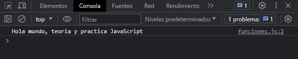
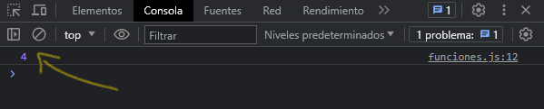
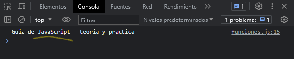
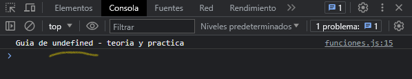
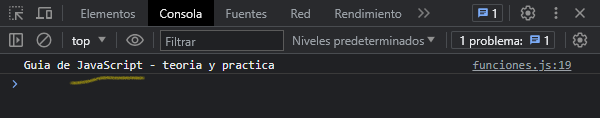
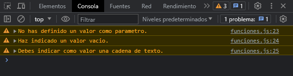
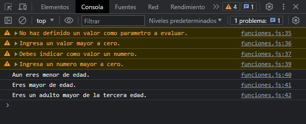

Definiendo una función
Toda función en JavaScript es un objeto Function. Las funciones no son lo mismo que los procedimientos. Una función siempre devuelve un valor, pero un procedimiento, puede o no puede devolver un valor.
Veamos como se define una función:
function saludo() {
console.log(`Hola mundo, teoria y practica JavaScript`)
}
saludo()
Hemos definido una función llamada saludo, dentro tiene una instrucción que imprime un mensaje por consola. Para invocar este método se coloca el nombre de la función seguido de paréntesis. Veamos el resultado:
Definiendo una función con valor de retorno
Para devolver un valor especifico distinto del predeterminado, una función debe tener una sentencia return, que especifique el valor a devolver. Una función sin una instrucción return devolverá el valor predeterminado, asi como en el ejemplo anterior.
Veamos como se define una función con valor de retorno:
function operacion() {
return 2 + 2
}
let resultado = operacion()
console.log(resultado)
Definimos una función llamada operación que nos devuelve una suma con la instrucción return, la función nos devuelve un resultado de una suma, por lo tanto ese resultado lo guardamos en una variable llamada resultado y luego la mostramos por consola, y veamos que nos imprime en la consola del navegador:
Definiendo una función con parámetros
Los parámetros en la llamada a una función son los argumentos de la función. Los argumentos se pasan a las funciones por valor.
Veamos como se define una función con parámetros:
function lenguaje(nombreLenguaje) {
console.log(`Guia de ${nombreLenguaje} - teoria y practica`)
}
lenguaje("JavaScript")
Hemos definido una función que recibe un parámetro llamado nombreLenguaje, dentro de esta función hay una instruction que nos imprime un mensaje y se concatena el valor del parámetro con la oración para mostrar el mensaje en consola. Veamos cual es el resultado:
Podemos observar que nos muestra un mensaje con el valor que le pasamos a la función. En este caso, el valor que le pasamos fue JavaScript. Pero que pasaría si no le pasamos un valor? Veamos que sucede:

El resultado que nos muestra es undefined ya que no hay un valor definido ni por el programa ni por el usuario. Para evitar esto hay varias formas, una de ellas es definir un valor al parámetro, y asi evitar en caso de que el usuario no ponga ningún valor como parámetro a la llamada de la función. O la otra solución es, mediante la estructura condicional if-else evaluar cuando el usuario no defina un valor y mostrarle un mensaje de advertencia indicando que no ha definido ningún valor.
Veamos la primera solución:
function lenguaje(nombreLenguaje = "JavaScript") {
console.log(`Guia de ${nombreLenguaje} - teoria y practica`)
}
lenguaje()
Le definimos un valor predeterminado en caso de que al llamar la función no se le escriba un valor al parámetro. Ya cuando el usuario defina un valor al parámetro, este se reemplazara. Veamos el resultado en consola:
Veamos la segunda solución:
function lenguaje(nombreLenguaje) {
if (typeof nombreLenguaje == "undefined") return console.warn("No has definido un valor como parametro.")
if (nombreLenguaje === "") return console.warn("Haz indicado un valor vacio.");
if (typeof nombreLenguaje !== "string") return console.warn("Debes indicar como valor una cadena de texto.");
console.log(`Guia de ${nombreLenguaje} - teoria y practica`)
}
lenguaje()
lenguaje("")
lenguaje(1234)
En esta segunda solución, evaluamos todos los casos (creo) que pueden suceder. Por ejemplo, evaluamos cuando solo se llame la función y no se defina ningún valor, evaluamos si el usuario dejo como campo vació el valor del parámetro, y finalmente evaluamos si el usuario indica cualquier valor que no sea una cadena de texto, mostrándola al usuario una advertencia de lo que esta sucediendo. Veamos el resultado en consola:
Definiendo una función con parámetros y valor de retorno
Este es un ejemplo de como podemos crear funciones que lleven parámetros y retornen valores, las dos combinados, y a la vez nos sirve como ejemplo de como validar diferentes casos cuando el usuario interactué con nuestro programa.
function calculoEdad(edadUsuario) {
if (typeof edadUsuario == "undefined") return console.warn("No haz definido un valor como parametro a evaluar.");
if (edadUsuario == 0) return console.warn("Ingresa un valor mayor a cero.");
if (typeof edadUsuario !== "number") return console.warn("Debes indicar como valor un numero.");
if (edadUsuario < 0) return console.warn("Ingresa un numero mayor a cero.");
if (edadUsuario > 0 && edadUsuario < 18) return console.info("Aun eres menor de edad.");
if (edadUsuario >= 18 && edadUsuario < 60) return console.info("Eres mayor de edad.");
if (edadUsuario >= 60) return console.info("Eres un adulto mayor de la tercera edad.");
}
calculoEdad()
calculoEdad(0)
calculoEdad('tengo 20')
calculoEdad(-30)
calculoEdad(14)
calculoEdad(41)
calculoEdad(75)
Este es el resultado:
Conclusion
Estas son las formas en las que podemos definir funciones, hay varias formas de definir funciones, las que hemos visto en esta ocasión son funciones declaradas, con parámetros, con valor de retorno, o ambas. Existen las funciones expresadas, funciones de flecha, funciones anónimas auto ejecutables, pero las veremos en otra sección.
Hay que tener en cuenta que no siempre una función debe retornar algo, hay veces que solo queremos que haga un procedimiento, una tarea y ya.